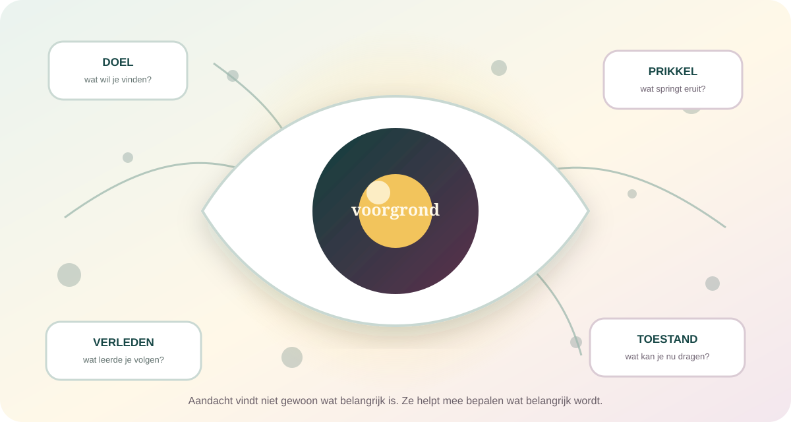

De kern in gewone taal
Aandacht is geen lamp die je gewoon harder moet aanzetten. Het is een voortdurend onderhandelingsproces.
Op ieder moment is er meer informatie dan je diep kunt verwerken. Aandacht geeft sommige signalen voorrang en laat andere naar de achtergrond verdwijnen. Doelen doen mee, maar ook opvallendheid, eerdere beloning, emotie, vermoeidheid, verwachtingen en de omgeving die je voor je neus krijgt. Daardoor is aandacht persoonlijk zonder volledig privé te zijn.
Zonder uitsluiting zou iedere prikkel met iedere andere concurreren. Focus ontstaat doordat niet alles tegelijk voorgrond kan zijn.
Zelfs bij gemotiveerde mensen varieert aandacht van moment tot moment. Een dip is geen karakteroordeel.
Ontwerp, sociale verwachtingen en verdienmodellen beïnvloeden wat om jouw blik, tijd en reactie strijdt.
Aandacht belicht niet alleen de wereld. Ze snijdt een wereld uit.
De zaklampmetafoor helpt om focus voor te stellen, maar maakt aandacht te eenvoudig. Je kunt een plaats, geluid, herinnering, lichaamsgevoel of gedachte selecteren. Soms verschuift die selectie vrijwillig; soms trekt iets je mee. En wat je selecteert wordt niet alleen helderder: het wordt sneller verwerkt, makkelijker onthouden en waarschijnlijker om je volgende handeling te sturen.

Aandacht vindt niet gewoon wat belangrijk is. Ze helpt mee bepalen wat belangrijk wordt.
“Mijn aandacht” is geen enkel talent dat overal even sterk is.
Alertheid
Ben je beschikbaar voor wat kan komen?
Wakkerheid en paraatheid bepalen mee hoe snel een belangrijk signaal überhaupt kans krijgt.
Oriënteren
Waarheen verschuift je verwerking?
Je ogen kunnen blijven staan terwijl aandacht naar een plaats, stem of moment verschuift.
Selecteren
Wat krijgt voorrang?
Een relevant signaal wordt versterkt terwijl concurrerende informatie minder diep wordt verwerkt.
Volhouden
Blijf je gevoelig voor het doel?
Bij langdurige taken schommelen snelheid, nauwkeurigheid en taakgerichte gedachten.
Controleren
Wat doe je bij conflict?
Doelen en regels helpen een automatische reactie te remmen of een minder opvallende optie te kiezen.
Intern richten
Wat krijgt ruimte in je hoofd?
Ook herinneringen, plannen, beelden en lichaamssensaties concurreren om mentale voorrang.
Geen universele score: iemand kan lang bij een geliefd onderwerp blijven en toch moeite hebben met monotone administratie. Taak, betekenis, prikkelniveau, vaardigheid en toestand veranderen wat een aandachtstest meet.
Iets kan recht voor je staan en toch niet in je bewuste verslag terechtkomen.
Bij onoplettendheidsblindheid missen mensen een onverwacht maar zichtbaar object terwijl ze een andere taak uitvoeren. Dat bewijst niet dat ogen niets registreerden of dat bewustzijn simpelweg “uit” stond. Het toont dat bewuste toegang afhankelijk is van selectie, taakbelasting, verwachting en de manier waarop opmerken wordt gemeten.
Je wint detail waar het doel ligt.
Gerichte verwerking kan kleine verschillen, zwakke signalen en relevante patronen beter toegankelijk maken.
De rest verdwijnt niet, maar krijgt minder kans.
Een onverwacht gezicht, bord of verandering kan buiten je verslag vallen, vooral bij hoge perceptuele belasting.
De les is niet dat mensen blind of dom zijn. Een selectief systeem kan juist precies werken doordat het informatie wegfiltert. Dezelfde oplossing maakt verrassende missers mogelijk.
Je intentie is een stem aan tafel, niet de enige voorzitter.
Huidig doel
Wie een rode jas zoekt, geeft rood tijdelijk meer prioriteit. Verwachting maakt bepaalde signalen sneller beschikbaar.
Opvallendheid
Beweging, contrast, geluid of nieuwigheid kan verwerking aantrekken, zelfs wanneer het niet bij je doel hoort.
Leerhistorie
Wat vroeger beloning, dreiging of betekenis voorspelde, kan aandacht blijven trekken nadat je doel veranderde.
Huidige toestand
Pijn, honger, stress, slaap en emotie veranderen welke signalen urgent lijken en hoeveel concurrentie je aankunt.
Geen simpele strijd tussen “top-down” en “bottom-up”
Recente modellen behandelen aandacht als de uitkomst van meerdere prioriteiten die tegelijk worden geleerd en bijgesteld. Een opvallend object wint niet altijd; een sterk doel is evenmin almachtig.
Concentratie is geen ononderbroken lijn. Ze ademt.
Bij langdurige taken wisselen perioden van stabiele prestaties af met tragere of impulsievere momenten. Die schommelingen hangen samen met taakbetrokkenheid, arousal, gedachten, motivatie en veranderende hersennetwerken. Onderzoekers verschillen nog over de precieze ritmes en oorzaken. Bewijs dat aandacht altijd netjes met één vaste frequentie “scant” is onvoldoende.
Patronen kunnen echt en belastend zijn, maar hun timing vertelt vaak meer: wanneer, bij welke taak, na welke nacht, in welke omgeving en met welke verwachting?
Goed kunnen focussen en goed kunnen wisselen zijn niet elkaars tegengestelde.
Een doel beschermen vraagt cognitieve stabiliteit. Een veranderde situatie opmerken vraagt flexibiliteit. Tobias Egner stelt dat beide door deels onafhankelijke mechanismen worden ondersteund en via ervaring worden bijgeregeld. Te veel stabiliteit kan koppig volhouden worden; te veel wisselbereidheid maakt ieder signaal een nieuwe opdracht.
Blijf bij de relevante regel.
Bescherm een taak tegen afleiding, automatische antwoorden en toevallige nieuwigheid.
Merk dat de regel niet meer past.
Laat een oud doel los wanneer context, informatie of prioriteit werkelijk veranderde.
Multitasken is meestal snel schakelen: bij twee taken met eigen doelen ontstaan wisselkosten, fouten en verlies van context. Sommige combinaties kunnen door oefening grotendeels automatisch worden, maar dat maakt twee veeleisende denkprocessen niet onbeperkt parallel.
Een geest die afdwaalt is niet automatisch een geest die faalt.
Taakvreemde gedachten kunnen prestaties verstoren, vooral wanneer snelheid en nauwkeurigheid belangrijk zijn. Maar afdwalen kan ook plannen, autobiografische verwerking en creatief combineren ondersteunen. Intentie, emotionele lading en meta-bewustzijn maken verschil: wist je dat je afdwaalde, koos je ervoor en kon je terugkeren?
Je merkt pas later dat je weg was.
De taak blijft zichtbaar, maar je verwerking wordt door een andere gedachtegang overgenomen.
Je geeft de geest tijdelijk ruimte.
Bij wandelen, douchen of rust kan vrij associëren nuttig zijn omdat directe taakprestatie niet het enige doel is.
De gedachte kiest steeds opnieuw jou.
Piekeren en dreigingsmonitoring voelen niet als creatieve vrijheid en vragen een andere benadering.
Meta-aandacht merkt de verschuiving.
Het moment “ik was weg” is geen mislukking maar precies het begin van opnieuw kiezen.
Aandacht is ook wat een lichaam vandaag kan dragen.
Slaaptekort, chronische pijn, medicatie, stress, hormonale veranderingen, honger en sensorische overbelasting kunnen alertheid en controle beïnvloeden. Dat maakt een aandachtsprobleem niet “ingebeeld”. Het maakt duidelijk dat concentratie niet uitsluitend in motivatie woont.
Slaap
Een vermoeid systeem mist en reageert trager.
Herstel beïnvloedt waakzaamheid, impulscontrole en de kans op korte lapses.
Dreiging
Urgentie vernauwt het veld.
Dat kan beschermen, maar maakt alternatieven en langetermijndoelen minder toegankelijk.
Pijn
Een lichaamssignaal eist voorrang.
Pijn concurreert met taken; dat is geen gebrek aan karakter of interesse.
Betekenis
Een relevant doel draagt langer.
Interesse helpt, maar kan structurele overbelasting of een klinische aandoening niet wegmotiveren.
Je telefoon heeft je aandacht niet vernietigd. Hij bevindt zich wel in een omgeving die voortdurend om schakelen vraagt.
Notificaties, beschikbaarheid en aangeleerde controlebewegingen kunnen taken onderbreken. Een meta-analyse van 22 studies vond gemiddeld een negatief “brain drain”-effect van smartphonegebruik of -aanwezigheid, maar niet ieder cognitief domein werd even sterk geraakt en studies verschillen. Eén klein experiment bewijst dus niet dat een toestel bij iedereen, altijd en overal hetzelfde doet.
Gewoonte, verwachting en keuze doen mee.
Veel checks worden door gebruikers zelf gestart. Verveling, sociale behoefte, onzekerheid en aangeleerde cues kunnen de hand naar het toestel sturen.
Keuze gebeurt nooit in een neutrale ruimte.
Meldingen, oneindige feeds, sociale feedback en variabele beloning maken terugkeren waarschijnlijker en verdienen afzonderlijke beoordeling.
Geen “dopamineverslaving” als totaalverklaring: dopamine speelt bij leren en motivatie een rol, maar verklaart niet in één woord waarom miljarden mensen verschillende digitale gewoontes ontwikkelen. Open het dossier Dopamine →
Wat als afleiding niet alleen een persoonlijk probleem is, maar ook een verdienmodel?
Dit is een normatieve en politieke analyse, geen diagnose van een individueel brein. Ze stelt andere vragen dan een reactietijdexperiment: wie kiest de standaardinstellingen, welke prikkels worden beloond en wie draagt de kosten van voortdurende bereikbaarheid?
Wie om aandacht strijdt, maakt meer prikkels.
Een overvloed aan aanbod betekent niet dat menselijke verwerking mee onbeperkt groeit.
Economische en mediakritische lensNiet iedereen kan even luid signaleren.
Platformregels, advertentiebudget en algoritmische rangschikking beïnvloeden welke stemmen collectieve aandacht bereiken.
Politieke lensVrijheid vraagt meer dan een aanklikbare keuze.
James Williams vraagt of technologie onze onmiddellijke aandacht, doelen en diepere levensrichting kan ondermijnen.
Filosofische lensAandacht groeit in relaties en omgevingen.
Yves Citton verschuift de vraag van individuele controle naar de media, ritmes, ruimtes en groepen die samen leren wat telt.
Culturele lensEen kritische kijk hoeft technologie niet als boosaardige geest voor te stellen. Ontwerpers, bedrijven, overheden en gebruikers hebben verschillende doelen. Precies daarom moeten effecten, belangen en alternatieven zichtbaar blijven.
Wat je beter niet als feit doorvertelt.
“Mensen hebben nu een aandachtsspanne van acht seconden.”
Er bestaat geen universele menselijke aandachtstimer die los van taak, doel en meetmethode kan worden uitgedrukt. De goudvisvergelijking is geen degelijk psychologisch resultaat.
“Als je echt wilt, kun je uren perfect focussen.”
Motivatie helpt, maar prestaties schommelen en worden beïnvloed door belasting, toestand, oefening en omgeving.
“De smartphone heeft ons brein permanent kapotgemaakt.”
Digitale prikkels kunnen gedrag en prestaties beïnvloeden. Dat is iets anders dan bewijs voor uniforme, blijvende hersenschade.
“Meditatie repareert aandacht.”
Sommige studies vinden verbeteringen op bepaalde taken, maar methoden, groepen en uitkomsten verschillen. Geen oefening is een universele behandeling.
Wie meet wat er gebeurt wanneer aandacht beweegt?
Jan Theeuwes
Hoe botsen doel, opvallendheid en selectiegeschiedenis?
Onderzoekt waarom opvallende prikkels soms voorrang krijgen en hoe ervaring bepaalt wat later automatisch trekt.
Monica Rosenberg & Michael Esterman
Waarom blijft aandacht nooit volledig vlak?
Bestuderen individuele en momentane verschillen in volgehouden aandacht via gedrag en grootschalige hersennetwerken.
Tobias Egner
Hoe balanceert controle tussen vasthouden en wisselen?
Verbindt taakfocus en flexibiliteit zonder ze als één schuif met twee uiteinden te behandelen.
Sophie Forster
Wanneer worden buitenprikkels en binnenwereld afleidend?
Onderzoekt perceptuele afleiding, werkgeheugen en mind-wandering als verwante maar verschillende routes weg van een taak.
Jonathan Smallwood
Wat doet een geest wanneer hij niet bij de taak blijft?
Maakt spontane gedachte tot een heterogeen onderzoeksveld met mogelijke kosten én functies.
Gloria Mark
Hoe ziet aandacht er buiten het laboratorium uit?
Meet digitaal werk, onderbrekingen, stress en taakwissels in dagelijkse omgevingen — met aandacht voor context.
Nilli Lavie
Hoe verandert belasting wat er nog binnenkomt?
Haar load theory onderscheidt perceptuele belasting van cognitieve controle en blijft onderwerp van toetsing en debat.
Stefan van der Stigchel
Hoe vinden ogen en aandacht hun weg door een volle wereld?
Onderzoekt visuele selectie, oogbewegingen, werkgeheugen en de praktische grenzen van wat we tegelijk kunnen verwerken.
Wie vraagt wat aandacht betekent voor vrijheid, macht en een leefbaar leven?
Yves Citton
Waarom spreken over een ecologie in plaats van enkel schaarste?
Ziet aandacht als iets dat collectief wordt gevormd door media, onderwijs, kunst, ruimtes en gedeelde gevoeligheden.
James Williams
Is afleiding ook een probleem van politieke vrijheid?
Vraagt of overtuigingstechnologie niet alleen momenten kaapt, maar ook doelen en de richting van een leven kan beïnvloeden.
Natasha Dow Schüll
Hoe kan ontwerp een toestand van eindeloos doorgaan ondersteunen?
Toont via onderzoek naar gokmachines hoe ritme, feedback en wrijvingloze interactie ervaring en winstmodel verbinden.
Jenny Odell
Kan opnieuw leren kijken een vorm van verzet zijn?
Plaatst aandacht terug in plaats, natuur, zorg en relatie, buiten de eis dat ieder moment productief of meetbaar moet zijn.
De lagen niet verwarren: deze denkers bieden interpretaties en normatieve argumenten. Hun werk kan onderzoeksbevindingen gebruiken, maar een overtuigend begrip als “aandachtsecologie” wordt niet bewezen door één hersenscan of experiment.
Onderzoek één aandachtssprong zonder jezelf te veroordelen.
- 1Kies een gewone taak van tien minuten.
Lezen, opruimen of een bericht uitwerken — niets gevaarlijks en geen verkeerssituatie.
- 2Leg vier mogelijke krachten klaar.
Doel, opvallende prikkel, eerder aangeleerde cue en lichaamstoestand.
- 3Zet telkens één streepje wanneer je terugkomt.
Niet wanneer je afdwaalt: het terugkeermoment is beter zichtbaar en minder veroordelend.
- 4Vraag wat je net trok.
Kwam het van buiten, van binnen, uit gewoonte of uit een legitieme lichamelijke behoefte?
- 5Verander één omgevingsvoorwaarde.
Leg een cue weg, maak het doel zichtbaar of plan een echte pauze. Test opnieuw zonder grote conclusie.
Het doel is niet nul afdwaling. Het doel is preciezer zien welke aandacht je nodig hebt, wat haar helpt en wie of wat met dat doel concurreert.
Wanneer verder kijken?
Aandachtsproblemen verdienen context, geen internetdiagnose.
Aanhoudende concentratieproblemen kunnen samenhangen met ADHD, slaap, angst, depressie, trauma, pijn, medicatie, middelen, gehoor of andere lichamelijke factoren. ADHD is bovendien heterogeen en wordt niet vastgesteld met één online test of hersenscan. Zoek professionele beoordeling wanneer problemen sinds langere tijd meerdere levensgebieden hinderen of plots nieuw en ernstig ontstaan.
Waarop dit dossier steunt.
- Aandachtscontrole · 2025Theeuwes — Attentional Capture and Control
Recente synthese over doelen, opvallendheid en selectiegeschiedenis in visuele aandacht.
- Neurale aandachtsvangst · 2024Lin et al. — Neural evidence for attentional capture
Intracraniële metingen tonen een breed netwerk dat reageert op opvallende afleiders.
- Onoplettendheidsblindheid · 2022Matias et al. — Perceptual and cognitive load
Systematische review en drie meta-analyses over belasting en het missen van onverwachte stimuli.
- Volgehouden aandacht · 2024Welhaf & Kane — Sustained attention consistency
Waarom reactietijdschommelingen en zelfgerapporteerde mind-wandering niet precies hetzelfde meten.
- Kritiek op vaste ritmes · 2022Brookshire — Putative rhythms in attentional switching
Toont waarom sommige analyses ritmische aandacht kunnen suggereren waar alleen tijdsstructuur aanwezig is.
- Focus en wisselen · 2023Egner — Principles of cognitive control
Modelleert cognitieve stabiliteit en flexibiliteit als deels onafhankelijke processen.
- Spontane gedachte · 2024Pavlova — A dual process model of spontaneous thought
Over automatische en gecontroleerde processen bij mind-wandering en taakgericht denken.
- Smartphone-effecten · 2023Böttger, Poschik & Zierer — Does the Brain Drain Effect Really Exist?
Meta-analyse van 22 studies vindt een gemiddeld negatief effect, met verschillen per cognitief domein.
- Digitale verveling · 2024Tam & Inzlicht — People are increasingly bored in our digital age
Verbindt digitaal schakelen, aandacht en verveling zonder één eenvoudige causale keten te claimen.
- ADHD · 2024Koirala et al. — Neurobiology of ADHD
Benadrukt heterogeniteit, meerdere oorzaken en een breinbrede blik in plaats van één defect gebied.
- AandachtsecologieCitton — The Ecology of Attention
Culturele analyse van de omgevingen die individuele en collectieve aandacht vormen.
- Vrijheid en ontwerpWilliams — Stand Out of Our Light
Filosofisch onderzoek naar overtuigingstechnologie, agency en de aandachtseconomie.
- Ontwerp en absorptieDow Schüll — Digital Gambling
Etnografische analyse van hoe verlangen, interactieontwerp en verdienmodel elkaar kunnen versterken.
Bronnen en kritische perspectieven zijn volgens ons bronnenbeleid als verschillende soorten kennis behandeld. Dit dossier vervangt geen medische of diagnostische beoordeling.